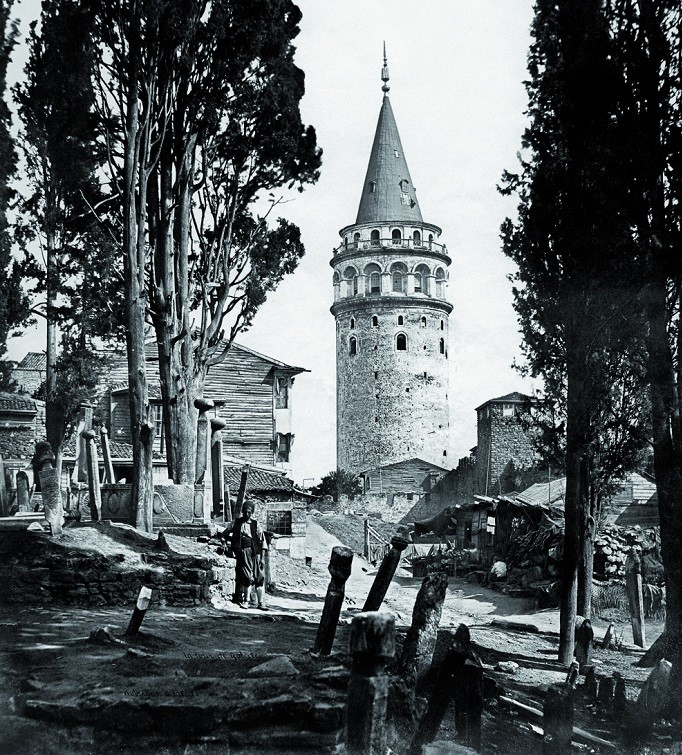

<!DOCTYPE html>
<html lang="en">
<head>
    <meta charset="UTF-8">
    <title>Osmanlı'ya gitmek</title>
</head>
<body>
<p id="osmanli"></p>

<script>
    document.getElementById("osmanli").innerHTML = "<center></center>"+"<center><b>Demek bir zaman seyyahısın. O halde gideceğin yerde ne bulacağından gayet habersizsin. Bu şekilde maceracı ruhunu kendine perçinlemişsin. Yolun açık olsun!</b></center>"+
        "<center><button onclick='klise()'>Klişe</button>" +
        "<button onclick ='hayirlisi()'>Aslında başka bir şey istiyorum</button>"+
        "<button onclick='baska()'>Başka ne olabilirdi?</button></center>" ;
    function klise(){
        document.getElementById("osmanli").innerHTML = "<center></center> "+
            "<center><b>Osmanlıya gideceksin. Buradan geri dönebilirsin. Fakat ileride böyle bir şansın olmayabilir.</b>"+
            "<center><button onclick='ileri()'>İleri</button></center> "+
            '<button onclick=\'location.href="Direnc.html"\'>Yeniden dene</button>';
    }
        function ileri(){
            document.getElementById("osmanli").innerHTML = "<center></center>"+
                "<center><b>İstanbul seni karşılıyor. Bu devletin şanı olan şehire gidiyorsun. Tarih=Belli değil<br/>Fotoğraflara tıklayarak devam edebilirsin</b></center>"+
                "<center> "+
                ""+
                ">";
    }
            function yeditepe(){
                document.getElementById("osmanli").innerHTML = "<center></center>"+
                    "<center><b>İstanbul'da bulunsan bile burayı tanıman gerçekten çok zor. Bir yere doğru gitmen lazım</b>"+
                    "<center><button onclick='kuzey()'>Kuzeye</button></center> "+
                    "<center><button onclick='bati()'>Batıya</button>"+
                    "<button onclick='dogu()'>Doğuya</button></center> "+
                    "<center><button onclick='guney()'>Güneye</button></center> ";
    }
                function kuzey(){
                    document.getElementById("osmanli").innerHTML = "<center><b>Dik yokuşlarda yürümeye başladın  hava ikindi vakti gibi, kararmaya yüz tutmuş.</b></center> " +
                        "<center><b>Tam bu sırada ,düş gücüyle birlikte duyduğun sesin sahibinin bir ayı olduğunu farz ediyorsun. Daha görmeden ters yöne doğru topukluyorsun.</b></center>"+
                        "<center>";
                        setTimeout("guney()",5000);
    }
                function guney(){
                    document.getElementById("osmanli").innerHTML = "<center><b>Yokuş aşağı iniyorsun. Pek bi ses duyduğun söylenemez. Hava gayet soğuk.</b> " +
                        "<b>Ağaçların arasından geçerken dökülmüş yaprakların hışırtısı seni mutlu ediyor. Galiba yalnızlığı bununla örtmeye çalışıyorsun.<br/> Hızlıca yürüdüğün yol en nihayetinde denizle buluşuyor. Evet ! bir gemi var. </b></center>"+
                        "<center></center>"+
                        "<center><button onclick='go()'>devam, lütfen</button> ";
    }
                    function go(){
                        document.getElementById("osmanli").innerHTML = "<center><b>Hiç düşünmeden bindin gemiye. Sağolsunlar İstanbula götürebileceklerini söylediler. Sen de yorgunluktan bi köşeye kıvrıldın.</b></center>"+
                            "<center></center>";
                        setTimeout("bin()",5000);
    }
                function dogu(){
                    document.getElementById("osmanli").innerHTML = "<center><b>İleride koca bir tepe görüyorsun. Buradan çıkamayacağın kesin. Hafif çapraz, tepenin güney yamacına doğru yol alıyorsun.</b> " +
                        "<b>Havanın serinlediğini, esen karayel rüzgarıyla anlıyorsun. Adımlarını sıklaştırıp güneşin batmaya yakın bir vakti sahile ulaşıyorsun. Şansına sevin. Çünkü burada terk edilmiş bir kayık var.</b></center>"+
                        "<center><button onclick='bin()'>Atla kayığa</button>"+
                        "<button onclick='baskasinin()'>Başkasının malıdır,binmem</button>";
    }
                    function bin() {
                        document.getElementById("osmanli").innerHTML = "<center><b>Sahil şeridini takip ederek Kadıköye varıyorsun. Şimdi anlıyorsun ki geldiğin yer anadolu yakasındaydı. Başına bir ağrı giriyor.</b>" +
                            " <b>Belki geçer umuduyla biraz kestiriyorsun.<br/>Fotoğraflara tıklayarak devam edebilirsin</b></center>" +
                            "<center></center> ";
    }
                        function bitis(){
                            document.getElementById("osmanli").innerHTML = "<center><b>Ne idüğünü bilmediğin adama güvenirsen böyle olur. Yykunda şişlendin.Gemiden attılar. Serin sular tabutun oldu.</b></center>"+
                                "<center></center>"+
                                '<button onclick=\'location.href="Direnc.html"\'>Yeniden dene</button>';
    }
                    function baskasinin(){
                        document.getElementById("osmanli").innerHTML = "<center><b>Havada kar taneleri göründü. Üşümekten kendini sakınabileceğin bir yer yok. Önce ayakların, sonra ellerin ve en sonunda bütün vücudun buz kesti.</b>" +
                            "<b></b> Son içine çektiğin nefes ciğerini acıtarak bitirdi yaşamını</b></center>"+
                            "<center></center>"+
                            '<button onclick=\'location.href="Direnc.html"\'>Yeniden dene</button>';
    }
                function bati(){
                    document.getElementById("osmanli").innerHTML = "<center><b>Batıya doğru yol alırken bir anda bir düzlüğe ulaşıyorsun. Belli ki burası bir yol.</b> " +
                        "<b>Yoldan batıya doğru gidişin devam ederken.Arkandan tekerlek sesleri geldiğini duyuyorsun. O da ne ? Bir at arabası.</b></center>"+
                        "<center></center>"+
                        "<center><button onclick='atarabasi()'>Bineyim</button> "+
                        "<center><button onclick='binmem()'>Yok almayayım</button> ";
    }
                    function atarabasi(){
                        document.getElementById("osmanli").innerHTML = "<center><b>Uzun bir yolculuktan sonra Üsküdara varıyorsun.</b></center>";
                        setTimeout("uskudar()",5000);
    }
                    function binmem(){
                        document.getElementById("osmanli").innerHTML = "<center><b>Soğukta üşümenin üstüne birde kurt saldırısı yaşadın. Bileklerini ıssıran kurtlar. Senin için iyi bir son hazırlamadı.</b></center>"+
                            "<center></center>"+
                            '<button onclick=\'location.href="Direnc.html"\'>Yeniden dene</button>';
    }
            function uskudar(){
                document.getElementById("osmanli").innerHTML = "<center><b>Üsküdar. Eski bir meydan, iki namazgah. Ezan okunurken düet yapan.Bir de çeşme. En büyüğünden.Üsküdar sahilden öbür yakaya bakıyorsun. Peki hedefin neydi?</b></center>"+
                        "<center>"+
                        "<center><button onclick='insgorme()'>İnsanları görmek</button> "+
                        "<center><button onclick='bizimev()'>Ya bizim ev üsküdarda, eskiden ne vardı yerinde onu merak ettim.</button> "+
                        "<center><button onclick='bukadar()'>Hedefime ulaştım bile</button> ";
    }
                function insgorme(){
                    document.getElementById("osmanli").innerHTML = "<center><b>İnsanlar ne yer, ne içer, nasıl giyinir; tartışması, çalışması, ahlakı nasıl olur? Velhasılı kelam Osmanlı insanı kimdir sorusunun maceracısı arkadaş.</b></center>" +
                        "<center><b>Dünya bir misafirhane. Nasıl insanlar gelip geçmiş. Tanımak, ibret almayınca neye yarar? Oyun diye geldiğin bu uygulamadan kafanda bir sonuç çıkartarak git isterim. Hoşçakal</center>"+
                        '<center><button onclick=\'location.href="Direnc.html"\'>Yeniden dene</button>';
    }
                function bizimev(){
                    document.getElementById("osmanli").innerHTML = "<center><b> Sahilden yukarıya çıkmaya başlıyorsun. Bi bakıyorsun ki her yer dutluk! Allah Allah</b>"+
                            "<center>"+
                        '<center><button onclick=\'location.href="Direnc.html"\'>Yeniden dene</button></center>';
    }
            function galata(){
                document.getElementById("osmanli").innerHTML = "<center></center>"+
                        "<center><b>Sur dışının ortasına gelmişsin. Buradan yönünü bulmak kolay. Ama önündeki adam pek tekin durmuyor.Yavaş adımlarlar yürürken adamın belinde hançer olduğunu fark ediyorsun.</b></center>"+
                        "<center><button onclick='hayirdir()'>Sen! hayırdır</button> ";
    }
                function hayirdir(){
                    document.getElementById("osmanli").innerHTML = "<center><b>Arkandan duyduğun bu sesi, daha sahibi bitirmemişken koşmaya başladın.</b></center>"+
                        "<center> "+
                        "<center> <button onclick='sag()'> Sağ </button>"+
                        "<center> <button onclick='sol()'> Sol </button>";
    }
                    function sag(){
                        document.getElementById("osmanli").innerHTML = "<center><b>Sağına döndüğünde hiç bilmediğin fakat anımsadığın bir kapı gördün. Fırsat bu fırsat deyip, kapıdan içeri girdin.</b></center>"+
                            "<center> <button onclick='tardis()'> Hangi kapı </button>";
                    }
                            function tardis(){
                            document.getElementById("osmanli").innerHTML = "<center>"+
                            "<center><b>Tebrikler ölmeden zaman makinesinden kurtuldunuz!</b></center>"+
                                '<center><button onclick=\'location.href="Direnc.html"\'>Yeniden dene</button></center>';
                        }
                    function sol(){
                        document.getElementById("osmanli").innerHTML = "<center><b>Yokuş aşağı bir yol var. Burdan yardırırken karşına bir kamyon adam çıkıyor. Ödün karışırken, arkanda bir mahalle adam dikiliyor. Eyvah!</b></center>"+
                            "<center> "+ "<center><b>Yazık gine yazık. İki taşkın mahalle arasında çıkan çatışmada ortada kalarak hayata veda ettin.</b></center>"+
                            '<center><button onclick=\'location.href="Direnc.html"\'>Yeniden dene</button></center>';
                    }

    function hayirlisi(){
        document.getElementById("osmanli").innerHTML = "<center><b>Peki ne istiyorsun?</b></center>"+
                "<center><button onclick='guc()'>Güç</button> "+
                "<center><button onclick='huzur()'>Huzur</button> ";
    }
        function guc(){
            document.getElementById("osmanli").innerHTML = "<center><b>Güç istemekle olur. Evet doğru bir karar vermişsin. O halde sana gücü veriyorum.</b></center>";
            audio = new Audio();
            audio.src = "Skyrim.mp3";
            audio.loop = false;
            audio.autoplay = true;
            setTimeout("arasahne()",7000)
            setTimeout("bitis()",27000)
    }
            function arasahne(){
                document.getElementById("osmanli").innerHTML ="<center>";
    }
            function bitis(){
                document.getElementById("osmanli").innerHTML ='<button onclick=\'location.href="Direnc.html"\'>Yeniden dene</button>';
    }
        function huzur(){
            document.getElementById("osmanli").innerHTML = "<center><b> Huzur ne yazık ki istemekle gerçekleşmiyor. Onun için illa karardan öteye gitmen gerekir. Bir eyleme eylemci olman lazımdır.</b></center>"+
                    "<center>"+
                '<center><button onclick=\'location.href="Direnc.html"\'>Yeniden dene</button>';
    }

    function baska(){
        document.getElementById("osmanli").innerHTML = "<center><b>Mesela zaman makinesi ayağına arafa düşebilirsin. Tarihte yok olup, Interstellar'ı yaşarsın. Matrix'e doğup,13.kat'tan aşağıya düşebilirsin.</b></center>"+
            "<center>"+
            "<center>"+
            "<center>"+
            '<center><button onclick=\'location.href="Direnc.html"\'>Yeniden dene</button>';


    }
</script>


</body>


</html>
